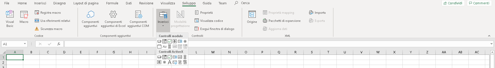
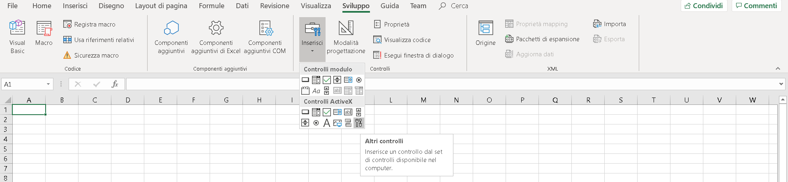
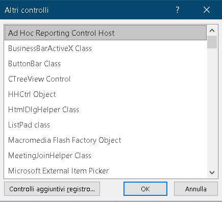

VBA in Excel offre anche delle possibilità grafiche e di sviluppo con le quali si possono creare dei programmi interessanti.
In particolare con alcuni strumenti di sviluppo si possono creare dei pulsanti, delle combobox e altre tecnologie che possono aiutare l'automatizzazione di alcuni processi.
Per trovare tutti gli strumenti che si possono utilizzare andiamo su
Sviluppo > Inserisci:

All'interno di questa finestra troviamo una serie di oggetti che si possono utilizzare per aumentare le funzionalità di excel chiamati controlli. In Excel sono disponibili due tipi di controlli: i controlli modulo e controlli ActiveX.
- I controlli modulo sono i controlli originali compatibili con le versioni
precedenti di Excel, a partire dalla versione 5.0. I controlli modulo sono anche
progettati per essere utilizzati nei fogli macro XLM. Quando si effettua un clic
sul controllo, la macro viene eseguita. I controlli modulo sono utili quando si
desidera fare riferimento ed interagire con i dati nelle celle senza utilizzare
codice VBA.
- I controlli ActiveX possono essere utilizzati sia nei fogli di lavoro (con o senza
l'ausilio di codice VBA) che negli UserForm. Quando un utente del modulo interagisce con il controllo, viene eseguito il
codice VBA per elaborare gli eventi che si verificano per quel controllo.
In questo contesto non andremo ad affrontare la tematica dei controlli modulo in quanto la logica di base è quella gia spiegata delle macro (
MACRO ;
link interessante) ci soffermeremo su quelli ActiveX.
I principali strumenti sono:
-
"Command Button": I pulsanti di comando sono anche chiamati pulsanti. È possibile assegnare un pulsante di comando per automatizzare la macro o alcuni calcoli di formule.
-
"Combo Box": Il controllo Combo Box viene utilizzato per visualizzare un elenco a discesa di elementi. È possibile aggiungere elementi all'elenco a scelta e creare elenchi a discesa utilizzando il controllo ComboBox. Questo controllo permette all'utente di selezionare un elemento sia digitando il testo nella combo box sia selezionandolo dall'elenco. La casella combinata è appropriata quando c'è un elenco di opzioni. Una combo box contiene un campo di modifica; le opzioni che non sono nella lista possono essere inserite manualmente. La casella combinata richiede meno spazio, poiché l'elenco completo non viene visualizzato finché l'utente non fa clic sulla freccia rivolta verso il basso.
-
"Check Box": Il controllo della casella di controllo visualizza un segno di spunta quando è selezionato. Generalmente, la casella di controllo viene utilizzata per mostrare all'utente una selezione Sì/No o Vero/Falso. L'utente può selezionare una o più opzioni contemporaneamente.
-
"List Box": Un controllo della casella di controllo mostra un elenco di voci da cui l'utente può selezionare una o più opzioni contemporaneamente. Con le caselle di riepilogo, l'utente può selezionare un elemento dalla lista. Per impostazione predefinita, le scelte sono visualizzate verticalmente in una singola colonna. L'utente può anche impostare più colonne. Una casella di riepilogo è appropriata quando si vuole limitare l'input a ciò che è presente nella lista.
-
"Text Box": Il controllo della casella di testo viene utilizzato per visualizzare le informazioni inserite dall'utente al momento dell'esecuzione, o assegnate alla proprietà Text al momento della progettazione. Il controllo della casella di testo deve essere usato per il testo modificabile. È possibile renderlo di sola lettura, impostando la sua proprietà Bloccato su True. Nelle caselle di testo, è possibile inserire più righe.
-
"Scroll Bar": Le barre di scorrimento forniscono una facile navigazione con un ampio elenco di elementi scorrendo sia orizzontalmente che verticalmente. Quando si clicca sulle frecce di scorrimento o su/giù o lateralmente o si trascina la barra di scorrimento, ci si può muovere attraverso una pagina cliccando sulla freccia di scorrimento. L'utente può anche inserire manualmente un valore di testo direttamente nella cella di riferimento.
-
"Spin Button": Un pulsante di rotazione può essere utilizzato per aumentare o diminuire un numero in una cella. Il pulsante di rotazione è utile per mostrare il valore minimo e massimo dell'intervallo impostato.
-
"Option Button": Il "Pulsante di opzione" può essere usato per selezionare un'opzione alla volta. L'importante funzione di 'Option Button' inizia quando si seleziona un pulsante di opzione, gli altri controlli dei pulsanti di opzione non sono disponibili. Nei casi in cui si dispone di più di un pulsante di opzione, è possibile selezionare un solo pulsante di opzione.
-
"Label": Le etichette identificano un controllo e il suo scopo. Le etichette forniscono una descrizione di ciò che un controllo farà se cliccate. Sono usate per etichettare i controlli che non hanno le loro proprietà di didascalia.
-
"Image": Il controllo immagine viene utilizzato per visualizzare la grafica. I controlli immagine possono essere visualizzati in formato inbitmap, JPEG o GIF.
-
"Toggle Button": Il pulsante Toggle è usato per nascondere/discondere una serie di righe
Ci sono molti altri ActiveX Controls a cui si può accedere come mostrato nell'immagine sottostante.

